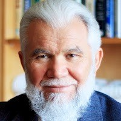

Dr Muhsin Abay

Karaman Gödetağini (Gülkaya) köyünde 1945 yılında doğdu. İlk orta ve liseyi Karaman’da okudu. 1968 yılında Ege Üniversitesi Ziraat Fakültesini bitirdi. Askerliğini 24 ay, Topçu yedek subay olarak yaptı. 1972-73 yıllarında Fransa Montpellier’de Kalkınma ve Karar Alma konusunda eğitim aldı. 1976 yılında Ege Üniversitesinde Tarım İşletmeciliği doktorasını tamamladı. Aynı Üniversitenin Ziraat ve Gıda Bilimleri Fakültelerinde İşletmecilik dersleri verdi.
1981-84 yıllarında Ege Bölgesi Sanayi Odası (EBSO) Etüd-Araştırma Müdürlüğü yaptı. 1984-1989 yıllarında İzmir Büyükşehir Belediyesinde Genel Sekreter Yardımcısı olarak; Encümen Başkanlığı yaptı, Şehirleşme ve Çevre koruma alanlarında çalıştı.
1990-2002 yıllarında İstanbul’da İhlas Holding’te yöneticilik ve danışmanlık yaptı. 2004-2008 yıllarında Türkiye Gazetesinde yazdı.
Yayınlanmış Kitapları
Zamanı Değerlendirmek -- 2000

Tenhaları arayan ve az hareketli hayâtı seven bir mizaca sahip olmakla berâber, Cenâb-ı Hakk'ın takdîri olarak, farklı meslek ve meşrepten insanlarla...
Büyükler Yolunda Öpülesi İzler -- 2015

Günümüze kadar gelen âlimler ve evliyâlar silsilesinden ziyaret etmekle şereflendiğimiz beldeler: Hicaz, Delhi, Semerkand, Buhâra, Kâhire, Bağdad ve Anadolu.
Sahip Olmaktan Kul Olmaya -- 2022

İnsan mutlu olmak, huzur içinde yaşamak ve aradığını bulmuş olarak ömrünü tamamlamak ister. Ama araştırmalar, istatistikler...
Kitap Yurdu